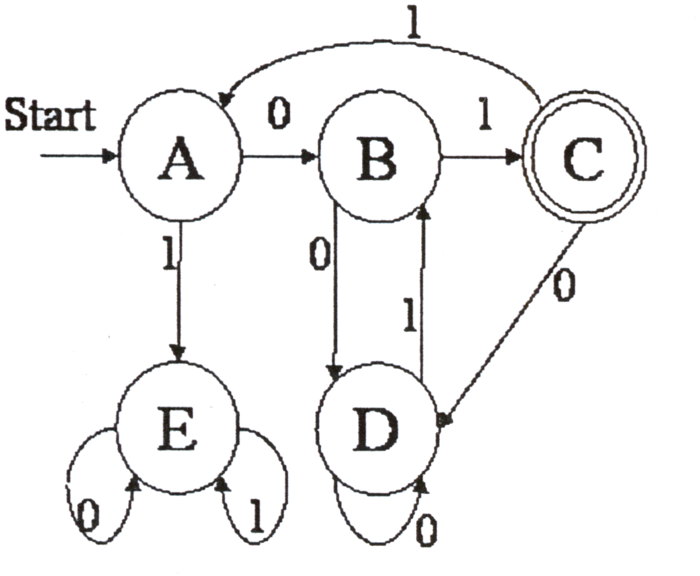

Figure 1.1 - The carpet for one game.
The next TV game will be played by single players on a special kind of labyrinth. The player will step on a carpet with a drawing like the one in fig. 1.1, and wait on position A. Each position has two ways out, labeled by 0 and 1, which lead to the next position. To choose which way to take, the player must answer a question. If the answer is correct he takes the 1 way, otherwise the 0 way is followed. Of course, the answer may be deliberately wrong if the 0 way is sought for. The next position may be different or remain the same as before.
Some of the positions, indicated by a double circle, are special. If, exactly after a predetermined number of moves, the player gets on one of those special positions he wins, otherwise he loses.
In the example, if the total number of moves is m=2, failing the first question and passing the second, i. e. the sequence 01, directs the player to go from A, the start position, to B and then to C. It solves the problem, as C is a special position, in the sole possible way. In fact, 00 would lead to D and 10 and 11 to E, which are not special. In the case m=3, there is no solution. But in the case m=5, several solutions are available, for instance 01011, 01101 or 00011. Thus there are 3 out of 2^m = 32 ways to win, which gives an idea of the probability of winning just choosing the moves by tossing a coin.
Notice that should A also be a special position, there would be a way of scoring in zero moves.
The problem to be solved is, given a carpet and a number of moves m, to determine the number of different ways to score, i.e., to reach one of the special positions in exactly m moves, from the start position. The start position is the first position, labeled A. From each position there are exactly 2 ways out, labeled by the symbols 0 and 1.
The input is a text file with one or more test cases, each of them containing several lines as follows.
The first line of the input contains the number N (integer format) of positions. The positions are labeled in alphabetic sequence, starting from A, and there are at most 26. The next N lines contain four characters each, separated by single spaces, where the first is the name of a position, the second the position the player reaches if he chooses the path labeled 0, the third the position the player reaches if he chooses the path labeled 1, and the fourth a 'x' if the position is special or a '-' if not.
The last line specifies m, the number of moves to be considered, 0 ≤ m ≤ 30.
For each test case, the output consists of one line which contains one integer indicating the number of different ways to win. 0 means there are no solutions.
Sample Input
5 A B E - B D C - C D A x D D B - E E E - 5
3